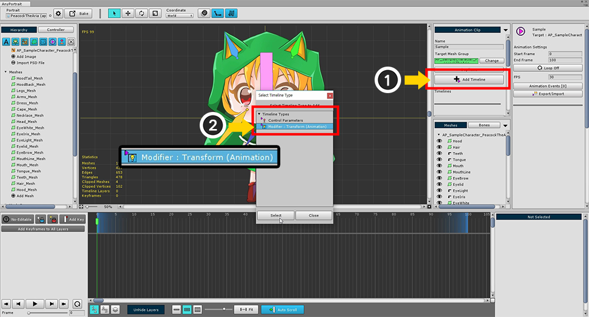
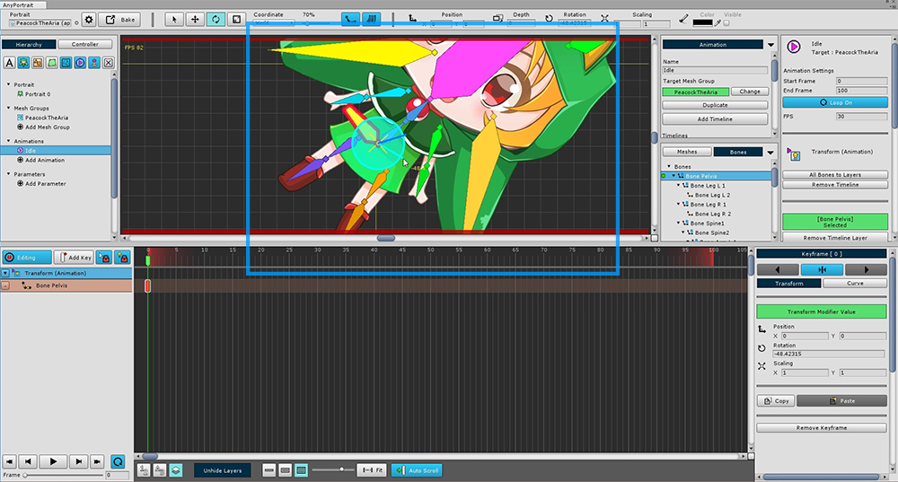
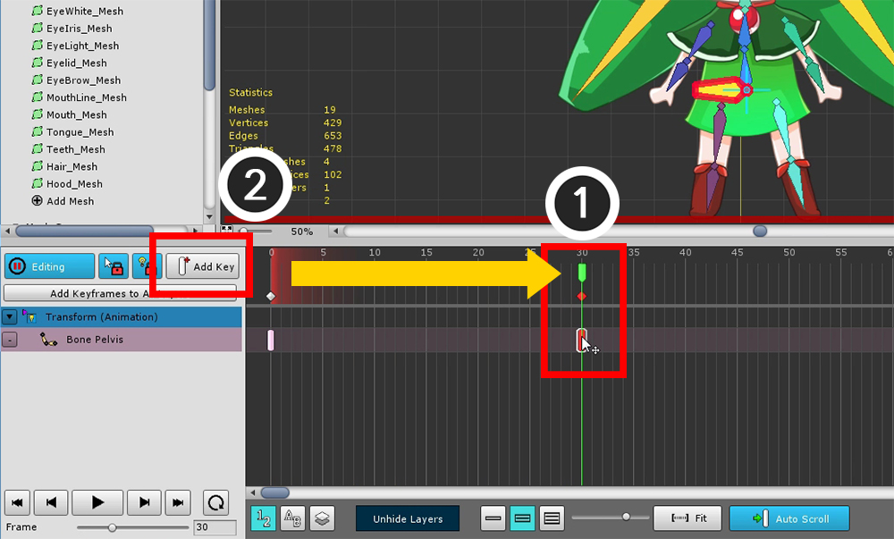
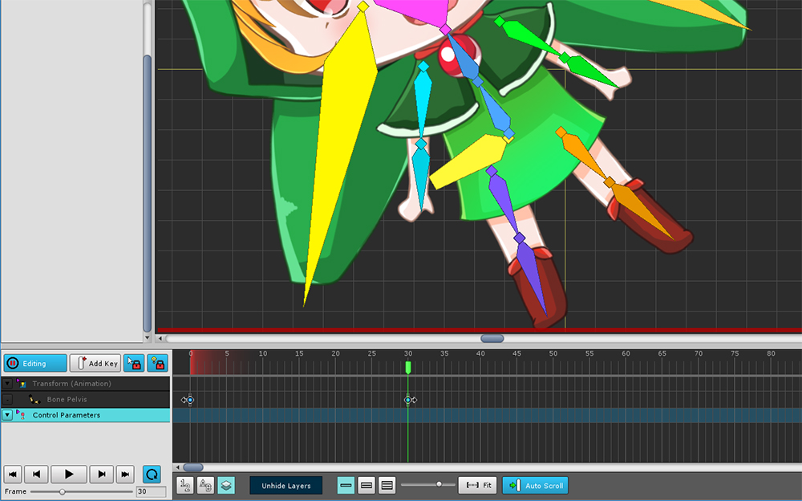
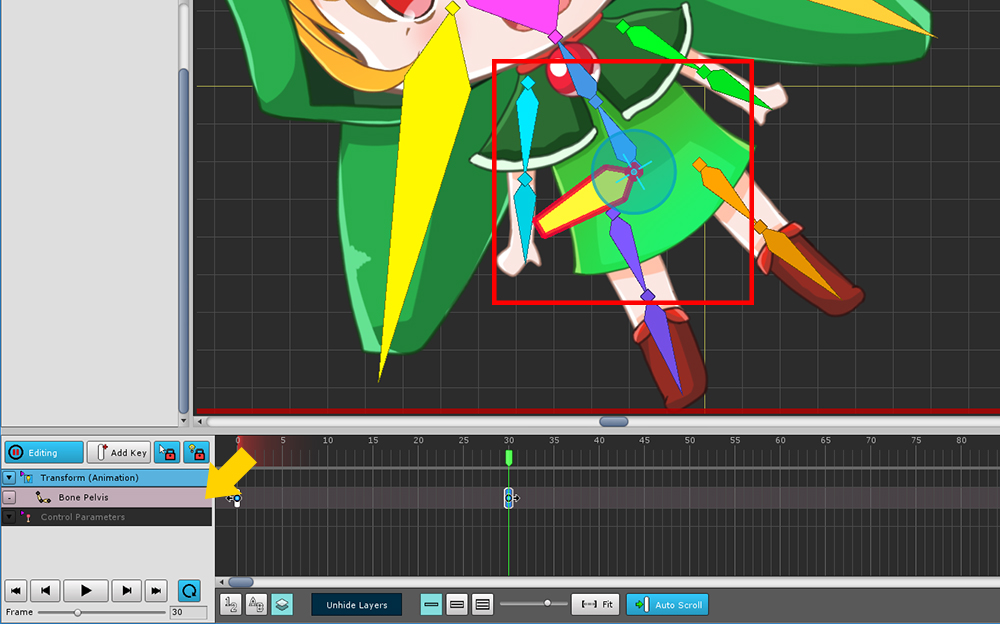
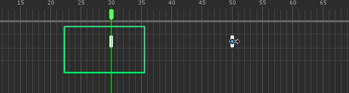
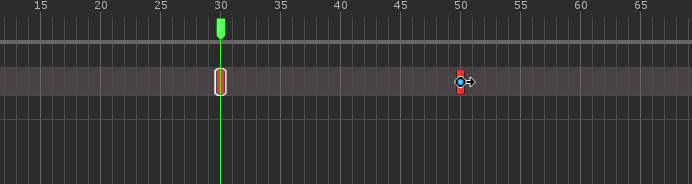

AnyPortrait > Getting Started > 2.7. Adding the Timeline
2.7. Adding the Timeline
1.0.0

To create a keyframe animation, you must add a timeline to the animation clip.
(1) Click the Add Timeline button to display the types of timeline that you can add.
By default, there is a "Control Parameters" timeline, and the "Animation Modifier" you added from the mesh group appears.
Select the (2) Transform (Animation) modifier you created earlier and add it.

Transform (Animation) Timeline is added.

Add a bone to the timeline.
After changing to (1) Bone tab, (2) Select one bone.
Click the (3) Add Timeline Layer to Edit button in the bone property UI.

Timeline layer for "Bone Pelvis" is added to the timeline.
To create animations, create animated clips, timelines, and timeline layers in order.

(1) Press the Start Edit button ( A ) to turn on the Edit mode.
(2) Press the Add Key button ( F ).
You can see that the keyframe is created where (3) the current time slider is located.

When Edit mode is on and the Keyframe is selected, you can transform the object.
This status is recorded in the keyframe.

If you create another keyframe, the animation will work.
(1) Move the time slider to another frame, and (2) press the Add Key button to create a keyframe.

Move the selected bone in the generated keyframe and record it.
Animation will now run when you play.
What if I can not select a keyframe or select an object?
If you have multiple timelines added and you turn on edit mode, you may not be able to select objects.
To select a keyframe and modify the object, you must select both "Timeline and Timeline Layers".

The above screen shot shows two timeline registered.
When you turn on edit mode, all unselected timelines are disabled and cannot be edited.
(You can see the darkened timeline and keyframes.)

In this state, you can select the timeline you want to modify.
Just click on the timeline header on the left.
(Timeline selection is available even if Selection Lock is on.)

Likewise, you can click on a timeline layer to select keyframes and objects.
If you can not make a selection or if you can not modify an object, just click on the header.
How to Select Multiple Keyframes

When selecting keyframes, you can Select the keyframes by specifying the area by Dragging the mouse .
You can also select keyframes from multiple timeline layers at the same time.


Hold down the Shift or Ctrl and Drag the mouse to select additional keyframes.
(On Mac OSX, use the Command as a shortcut instead of Ctrl .)


Hold down the Alt and Drag the mouse to exclude the selected keyframes.
How to move or copy keyframes

You can move to another frame by Drag and Drop the selected keyframe.
(All selected keyframes move at the same time.)


Hold down the Shift or Ctrl and Drag and drop to copy the keyframes.
(On Mac OSX, use the Command as a shortcut instead of Ctrl .)